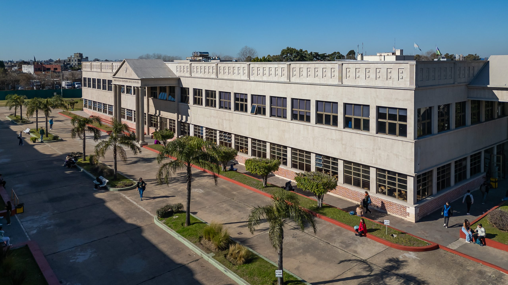
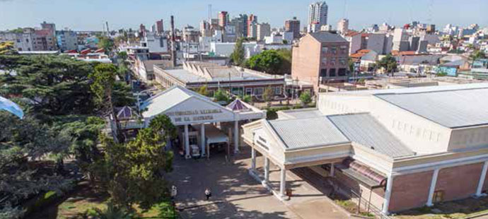

Fecha de Ingreso: 26/06/2003
Fecha de Salida: 25/04/2006
Tecnicatura en Desarrollo Web: Durante mi transcurso en la tecnicatura he adquitido diversas habilidades técnicas para la esquematización, desarrollo y mantenimiento de servidores y sitios web. He obtenido conocimientos en lenguajes como Java, Javascript (con sus respectivos frameworks como Angular o React), HTML, CSS y SQL (con sus respectivos frameworks como Spring o MySQL).
En el último año de mi cursada he hecho un proyecto final para Samsung desarrollando una plataforma responsiva y funcional para la muestra y venta de los productos de su última gama como así un sistema para gestionar la pre-venta y sistema de pagos de los mismos.
Imágenes de la Institución:


